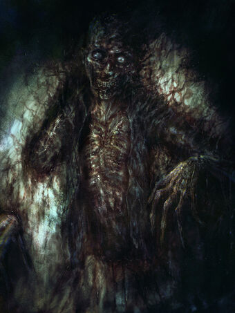

SCP-106 - Старик
Фізичне взаємодія з SCP-106 заборонено за будь-яких обставин. Дозвіл на фізичне взаємодія може бути дано тільки за згодою не менше 8 з 12 учасників ради ПРО5. Зазначене взаємодія слід проводити в зонах з максимальним рівнем безпеки AR-II і тільки після евакуації всіх співробітників, за винятком необхідних для функціонування Зони. Всім співробітникам (науковому персоналу, службі безпеки, класу D і т.д.) слід дотримуватися дистанції в шістдесят метрів від камери змісту, підходити ближче допускається тільки в разі порушення умов утримання.
SCP-106 слід утримувати в герметичному контейнері, що складається з сорока шарів стали зі свинцевим покриттям. Проміжки між шарами повинні бути не менше 36 см, опорні балки слід встановлювати на нерівних відстанях один від одного. Зазначений контейнер повинен утримуватися як мінімум в 60 сантиметрах від будь-якої поверхні за допомогою електромагнітного підвісу ELO-IID.
Вторинна область змісту повинна складатися із шістнадцяти сферичних "осередків", заповнених різними рідинами і випадковим набором площин і опор. Також вона повинна бути оснащена автоматизованою системою освітлення, здатної створити на всій території вторинної області освітлення з силою світлового потоку в 80 000 люмен у випадку спрацьовування без участі людей. Обидві області змісту повинні перебувати під цілодобовим наглядом.
Про всі ознаки роз'їдання на поверхнях камер змісту, тілах співробітників або інших місцях Зони в межах двохсот метрів від SCP-106 слід доповідати службі безпеки Зони. Речі і співробітники, забрані SCP-106, автоматично вважаються втраченими / загиблими під час виконання боргу. Спроб вилучення і порятунку не слід робити ні за яких обставин.
Опис: SCP-106 виглядає як літній гуманоїд на пізній стадії розкладання. Зовнішність змінюється від випадку до випадку, але властивість "гнилість" притаманне будь-якому вигляду. SCP-106 не особливо спритний, і часом лежить без руху по кілька днів, чекаючи жертву. SCP-106 також може дертися по будь-якої вертикальної поверхні і висіти догори ногами як завгодно довго. Улюблена форма атаки SCP-106 - виведення жертви з ладу шляхом пошкодження життєво важливих органів, груп м'язів і зв'язок, після чого SCP-106 затягує знерухомлену жертву свого "кишенькове вимір". Сама краща для SCP-106 жертва - люди у віці від 10 до 25 років.
SCP-106 викликає "роз'їдання" всіх твердих поверхонь, до яких торкається, фізичне розкладання матеріалу починається через кілька секунд після першого дотику. Зовні це проявляється як іржавіння, гниття і розтріскування матеріалу; також матеріал покривається чорною слизової субстанцією, схожою з тим, чим покритий сам SCP-106. Це вплив особливо згубно для живих організмів. Вважається, що це - підготовка їжі до перетравлювання. Ефект триває протягом шести годин після дотику, після чого "загасає".

SCP-106 здатний проходити крізь тверді тіла, покриваючи їх при цьому своєї розкладницької слизом. Усередині твердих предметів SCP-106 може "зникати", йдучи, згідно сучасним теоріям, в своє "кишенькове вимір". SCP-106 здатний покинути цей вимір через будь-яку поверхню, фізично пов'язану з місцем догляду (наприклад: "пішов" у внутрішню стіну кімнати, "повернувся" через зовнішню; "пішов" в стіну, "вийшов" з стелі). Невідомо, чи є цей вимір місцем походження SCP-106 або ж просто його "лігвом".
Відомості про це "кишеньковому вимірі" украй мізерні. Відомо, що воно складається в основному із залів і кімнат зі [ДАНІ ВИДАЛЕНІ] входом. Такі дії можуть тривати кілька днів, деяких жертв SCP-106 відпускає з метою полювання, повторної упіймання, [ДАНІ ВИДАЛЕНІ].
Про поведінку об'єкта:

SCP-106 властиві тривалі періоди бездіяльності, під час яких він зовсім нерухомий. Вони можуть тривати до трьох місяців. Причина такої поведінки невідома; на даний момент, вважається, що це тактика "усипляння уваги". З цього стану SCP-106 миттєво переходить у фазу активних дій, в ході якої він атакує і викрадає персонал і завдає значної шкоди як своїй камері змісту, так і всієї Зоні. Протокол повернення [ДАНІ ВИДАЛЕНІ].
Схоже, що SCP-106 полює не заради прожитку, а за примхою. Під час фази активних дії SCP-106 атакує і збирає багато жертв, більшість з яких тримає "живими" в своєму кишеньковому вимірі протягом тривалого періоду часу. Гранична кількість жертв, якщо таке є, не встановлено, число зібраних SCP-106 жертв змінюється від разу до разу.
"Кишеньковий вимір" SCP-106, схоже, є лише йому самому. Пристрої для запису відео та передачі сигналу не втрачають працездатності в цьому вимірі, хоча якість запису і переданого сигналу дуже сильно страждає. За деякими відомостями, SCP-106 "грає" з спійманими жертвами, користуючись повним контролем над простором, часом і чуттєвим сприйняттям в межах цього виміру. Схоже, також, що SCP-106 [ДАНІ ВИДАЛЕНІ].